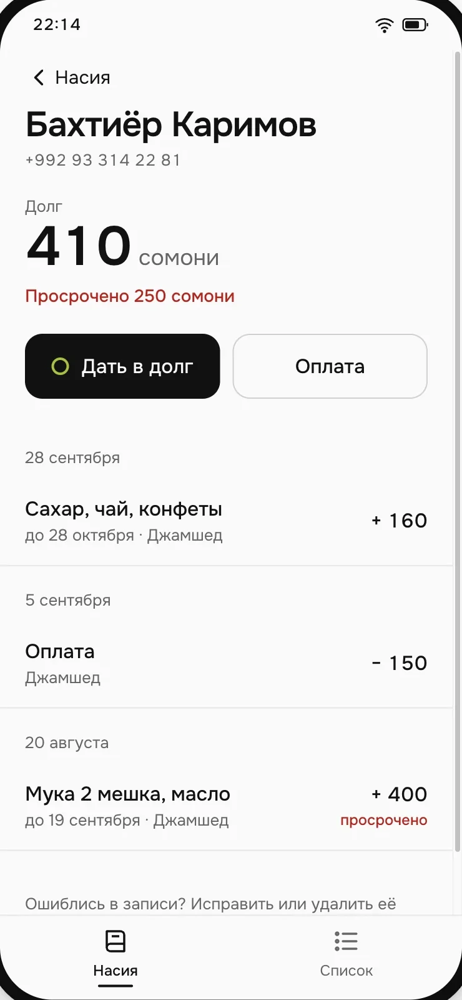
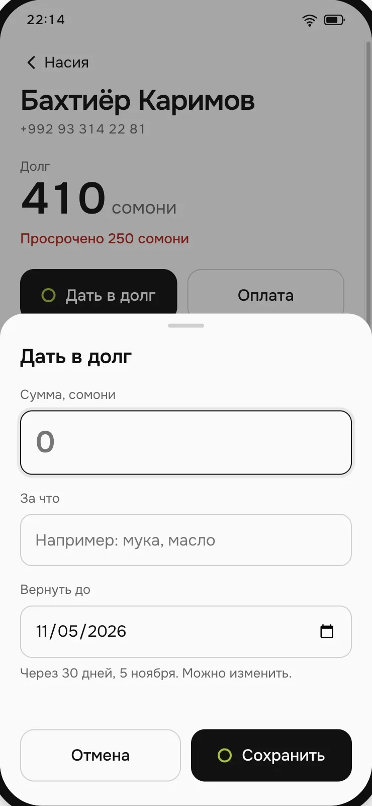
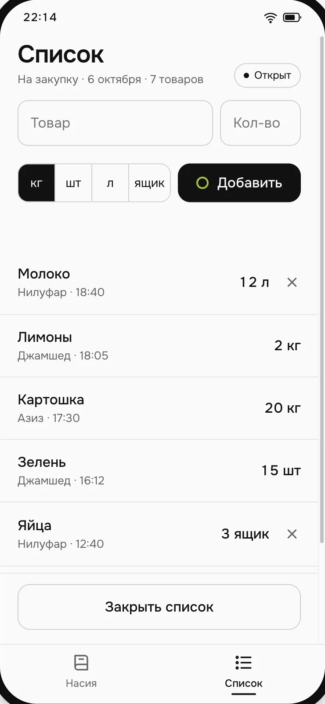
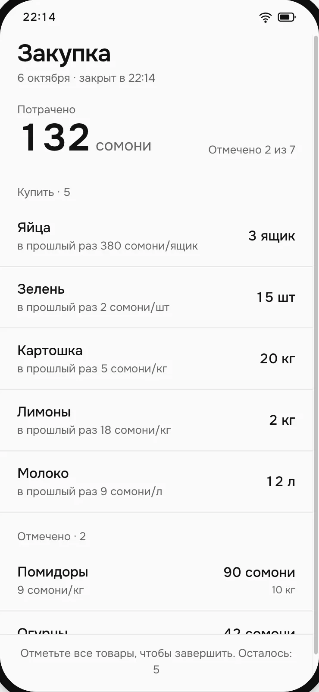
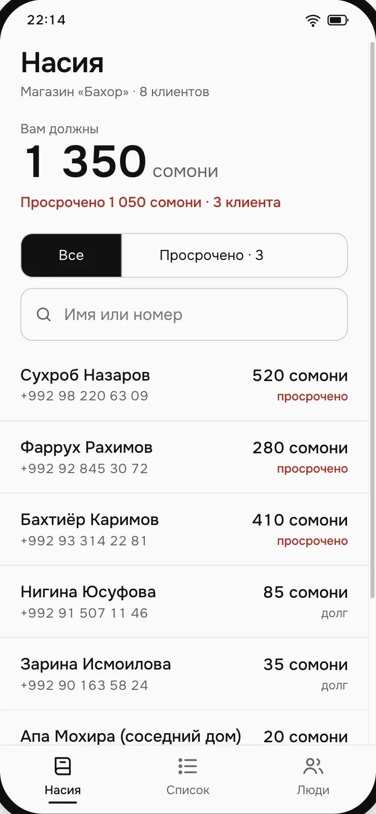
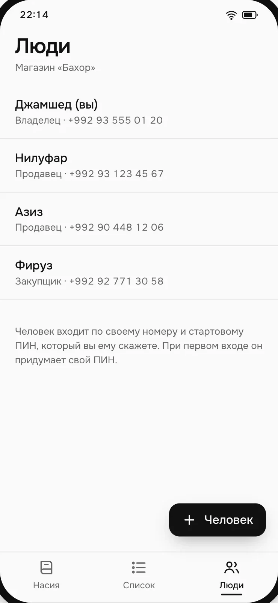

- нет:
Касса - нет:
Склад - нет:
Учёт продаж - нет:
Отчёты - есть: Тетрадь долгов
- есть: Список закупок
Две тетради вашего магазина — в телефоне. И больше ничего.
Shoppy — приложение для небольшого магазина. Открывается в браузере телефона. В нём только то, что раньше писали на бумаге: кто сколько должен и что купить завтра.
Консультация в Telegram«Сколько я должен?»
Ответ — пока покупатель ещё стоит у прилавка.
- Продавец записывает долг и оплату за несколько нажатий. Покупатель не ждёт.
- Остаток считается сам, из записей. Ничего не нужно пересчитывать.
- Срок по умолчанию — 30 дней. Кто просрочил, видно сразу.
- Удалить запись может только хозяин. Ошибку исправляют, а не стирают.


«Что купить завтра?»
Один список на весь магазин. Никто не пишет одно и то же дважды.
- За день продавец добавляет в список то, что кончилось.
- Вечером список закрывают — продавец или хозяин. После этого добавить уже нельзя.
- Закупщик видит закрытый список на базаре, отмечает купленное и цену.
- Список идёт только вперёд: открыт → закрыт → куплен.


Три человека, один магазин
Каждый видит своё. Данные общие.
Пишет долги и оплаты. Добавляет в список закупок и может его закрыть.
Видит только закрытый список. Долги покупателей ему не показываются.
Видит всё. Добавляет сотрудников и задаёт им PIN для входа. Исправляет записи. Может закрыть список.


Без интернета тоже работает
Связи нет — это обычный день, а не ошибка.
Записи сохраняются на телефоне и отправляются, когда появится связь. Сколько записей ждёт отправки, видно прямо на экране. Закупщик на базаре с плохим сигналом отмечает покупки так же, как и с хорошим.
Чего здесь нет
Если магазину нужно что-то из этого списка, Shoppy не подойдёт. Если нужно избавиться от двух тетрадей — подойдёт.
Склада и остатковКассы и чековУчёта каждой продажиОтчётовШтрихкодовКаталога товаровПоставщиковНапоминаний по SMS
Расскажите про свой магазин
Напишите в Telegram: сколько продавцов, кто ходит на базар, как сейчас ведёте долги. Разберём, подойдёт ли Shoppy именно вам.
КонсультацияTelegram · @znematov